Li DONG
Research
-
๏ Research Assistant, Scientific Computation Research Center (SCOREC), RPI. Aug 2013 - Aug 2017
-
• Implement adjoint-based PDE-constrained optimization algorithms for large-scale simulation with FEniCS in Python.
-
• Develop and implement an algorithm to use Split Bregman method for l1-regularized nonlinear PDE-constrained optimization.
-
• Applied algorithms to identify linear and nonlinear elastic material parameters in real biological tissues: Using the measured displacement field obtained by techniques such as Digital Image Cross-correlation (DIC) and probably filtered with Principal Component Analysis (PCA), the inverse problem is posed as a PDE constrained minimization, and solved with a continuation strategy and adjoint equations in adaptive mesh and spatially decomposed domains. (OCT experiments were performed by OBEL, UWA. Ultrasound tests were performed in LMA at CNRS, France.)

Mesh adaptivity of a stiff inclusion in a homogeneous tissue-mimicking phantom.
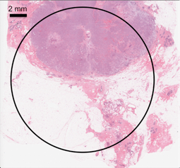

H&E histology of a malignant breast tumor tissue. Mesh adaptivity and shear modulus distribution of malignant breast tumor tissue ex-vivo:
The black circle is the ROI. both elliptical tumor tissues have soft necrosis centers.
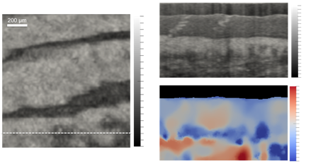

OCT en-face image of fingertip tissue. Top: OCT B-scan image under the white 3D shear modulus distribution of fingertip tissue in-vivo: three
dashed line in the en-face image. stiff ridges are more-compressed tissue under bulged
Bottom: Corresponding shear modulus fingerprints.
distribution. Note the recovered triple layer
structure and sweat glands.
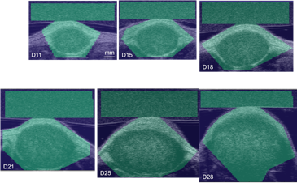
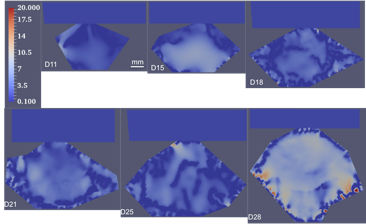
Tumor evolution on days 11, 15, 18, 21, 25 and 28. Left six images are ultrasound Bmode images and the regions of interest are shaded in green.
Right six images are recovered shear modulus distribution.
-
• Developed and implemented algorithms for evaluating cellular tractions in FORTRAN: Using the experimentally measured displacement field, the inverse problem is posed as a PDE constrained minimization, and solved with adjoint equations. Both geometric and material nonlinearity were considered.
The experimental data of the following human umbilical vein endothelial cell (HUVEC) was obtained from Christopher Chen’s group.
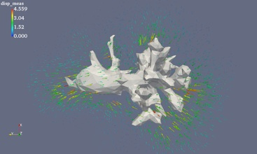

Measured displacement around HUVEC. Recovered traction on the surface of HUVEC.
-
๏ Research Assistant, Dept. of Civil, Construction, & Environmental Engineering, UAB. Aug 2010 - May 2013
-
• Worked on bridge-truck interaction modeling with HyperMesh and LS-DYNA as a simulator for the Moving Force Identification algorithm – an inverse problem that computes axle loads of a truck from the dynamic response of the bridge. research_bridge_truck interaction.pdf
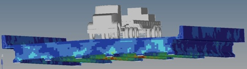
3D Finite Element model of vehicle-bridge interaction (based on work of Jerry Wekezer, FSU)
-
• Investigated the resistance of composite structural insulated panels under hurricanes, such as large pressure and high velocity impact with HyperMesh and LS-DYNA and developed innovative building structural design approach based on multi-hazard (such as earthquakes and hurricanes) reliability analysis and simulation by ANSYS. research_CSIP.pdf
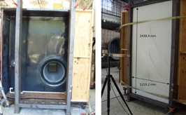

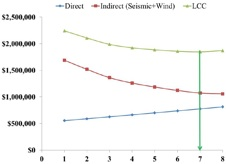
Simulated wind pressure tests on sandwiched panels FE model of sandwiched panels Life-cycle cost analysis of sandwiched panels
(expr. data obtained from F.J. Masters, UF) under wind pressure in LS-DYNA under seismic and wind hazard
Teaching
-
๏ Teaching Assistant, Dept. of Mechanical, Aerospace & Nuclear Engineering, RPI. Fall 2014, Spring 2014, Fall 2013
-
• MANE 4050 Modeling and Control of Dynamic Systems: ~150 students, graded homework and tests and held office hours.
-
๏ Teaching Assistant, Dept. of Civil, Construction, & Environmental Engineering, UAB.
-
• CE 650 / 750 Advanced Structural Steel Design: graded homework and tests. Fall 2012
-
• CE 450 Structural Steel Design: graded homework and tests. Fall 2011
Side projects
-
๏ Variational PDE methods for image processing Spring 2016
Course project for Variational PDE methods for Image Processing:
-
• Gradient descent, finite difference and finite element methods were performed and compared in solving the Tikhonov-regularized data denoising problem in 1D and 2D [report_tikhonov.pdf];
-
• Gradient flow, lagged diffusivity fixed point iteration and Chambolle projection methods were performed and compared in solving the Rudin-Osher-Fatemi formulation in 1D and 2D [report_ROF.pdf];
-
• Split Bregman method was implemented for three specific l1-regularized problems: image denoising, image inpainting and compressive sensing [report_splitBreg.pdf].
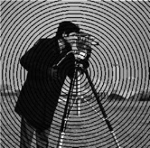
Noisy image and denoised image. Polluted image and inpainted image.
-
• Analyzed the snake model and implemented the geodesic active contour model [report_GAC.pdf].
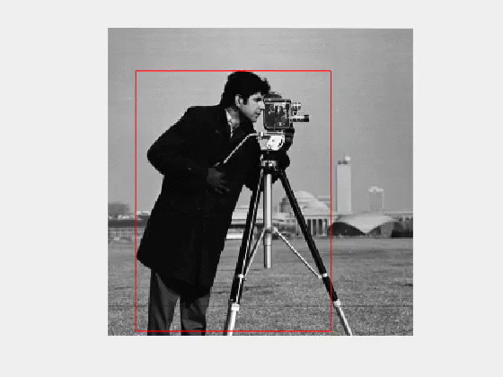
Image segmentation with geodesic active contour model.
-
• Implemented and compared the non-convex and convex Chan-Vese segmentation models. [report_imgSeg.pdf].
-
๏ Nostradamus’ Grand Cross – N body simulation with parallel programming Spring 2015
Course project for Applied Parallel Computing: Implemented and benchmarked the classic N-body algorithms such as Barnes Hut algorithm and brutal force scheme with both parallel (CUDA) and serial methods in C++ and visualized the recovery of a cross shape from a "randomly" scattered points. (Team members: Li Dong and Hui Lin) [report_parallel.pdf] {demo}
-
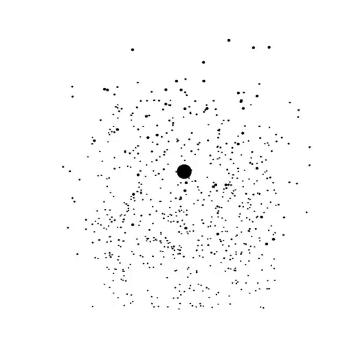
N-body simulation to recover a cross shape
-
๏ Finite Element Analysis in Inverse Problems of Biomechanical Imaging Fall 2013
Course project for Fundamentals of Finite Element: Identified the shear modulus distribution in an inverse elasticity problem, where the displacement field were obtained from Ultrasonic imaging. This inverse problem was posed as a PDE constrained minimization problem and finite element method was applied to the PDEs resulted from the Euler Lagrange Equations. [report_fem.pdf]


Input: measured displacement fields in x and y directions. Output: recovered
shear modulus distribution
-
๏ Binomial Option Pricing Fall 2013
Course project for Introduction to Financial Math & Engineering: Used binomial tree algorithm to approximate the option chain (call & put) in real time given only stock ticker with Matlab. [report_FinMath.pdf]
-
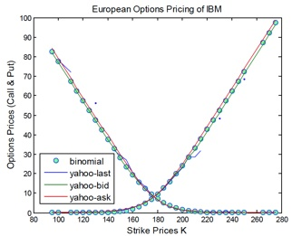
Real time option pricing with binomial tree model, given only stock ticker.
-
๏ Modeling Forest Fire Spread with Monte Carlo Simulation Fall 2012
Course project for Probability & Statistics in Computer Science: Investigated the classical percolation problem and simulate the forest fire spread with Monte Carlo methods in Java. [report_MCfire.pdf]
-
-
๏ Innovative Algorithm for Truck Axle Detection on Highway Bridges Fall 2012
Course project for Digital Signal Processing: Investigated the matched filter for truck axle detection on highway bridges in Matlab. [report_axleDetect.pdf]
-
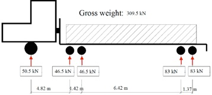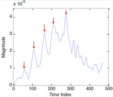
A US standard five-axle truck and its axle detection. Results were obtained by convoluting strain signals with a matched filter kernel.
-
๏ Impact Simulation with LS-DYNA on Glass Fiber Reinforced Structural Panels Oct. 2012 - Feb. 2013
Used LS-DYNA for low and high velocity impact simulation and experimental verification on glass fiber reinforced structural panels. (Team members: Li Dong, Rahul Kalyankar) [report_impactGlassFiber.pdf]
-
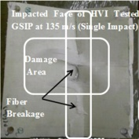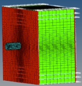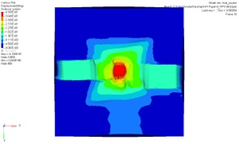
A sandwiched panel under high velocity impact: experiment (left) and finite element model in LS-DYNA (right).
-
๏ Behaviors of the Composite Sandwich Insulated Panel (CSIP) under Wind Load Fall 2011
Course project for Computational Structural Mechanical Software Application [ME690_790_syllabus.pdf]: Used HyperMesh to create the mesh and LS-DYNA to solve for the dynamic behaviors of the composite sandwich panel under varying wind load. [report_csip_lsdyna.pdf]
-
-
๏ A Review on Non-destructive Testing Techniques for Bridges Spring 2011
Course project for Non-destructive Evaluation of Materials: Summarized the nondestructive testing techniques for bridges in a paper and presenting slides. [report_NDT.pdf]
-
-
๏ Modeling of Bridge under Static Truck Load with ANSYS Fall 2010
Course project for Introduction to Finite Element Method: Attempted to creating a modeling of a CFRP repaired bridge under AASHTO truck load with ANSYS. Although the CFRP layer was not successfully attached, the bridge did deflect in the expected range. (Team members: Li Dong, Luis Ramos) [report_truck_ANSYS.pdf]
-
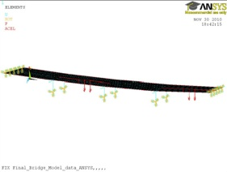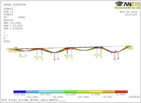
A highway bridge under two static truck loads (red arrows) and its deflection.